Introduction
Rust Enhanced is a Sublime Text package which adds extended support for the Rust Programming Language. This is a replacement for the built-in "Rust" package and provides several extensions:
- Enhanced syntax highlighting which handles more recent language changes and improved highlighting.
- Custom highlighting for Cargo output.
- A custom build system with complete configuration of running Cargo and supporting Rust's extended error messages.
- Automatic checking every time you save a file.
Installation
The "Rust Enhanced" package should be installed with Package Control. See https://packagecontrol.io/installation for instructions on how to install Package Control.
After you have Package Control installed, follow these steps:
- Open the command palette (
Control Shift PorCommand Shift P) in Sublime Text. - Type the command
Package Control: Install Package - Type the name
Rust Enhancedand choose it from the list.
Installing Rust Enhanced should automatically disable the built-in Rust package.
TOML syntax highlighting
TOML syntax highlighting is provided by a separate package called TOML.
It is recommended to install this for editing Cargo.toml and other TOML files.
Use the Package Control: Install Package command and choose the TOML package.
Cargo Build System
Rust Enhanced has a custom build system tailored for running Cargo. It will display errors and warnings inline using Sublime's phantoms (see Diagnostic Messages for settings to control how messages are displayed). It also supports a variety of configuration options to control how Cargo is run.

Usage
When Sublime is set to use "Automatic" build system detection, it will choose the build system based on the syntax of the currently active view.
When you have a file open with the .rs extension, Sublime will automatically select the Rust Enhanced syntax highlighting, and the Automatic build system will pick Rust Enhanced to perform the build.
If you want to ensure the Rust Enhanced build system is used regardless of which file is open, choose it via Tools > Build System > RustEnhanced.
The basic Sublime commands available are:
| Command | Keyboard | Menu | Description |
|---|---|---|---|
| Build | Ctrl-B / ⌘-B | Tools > Build | Runs the currently active build variant. |
| Build With... | Ctrl-Shift-B / ⌘-Shift-B | Tools > Build With... | Choose the build variant. |
| Cancel Build | Ctrl-Break / Ctrl-C | Tools > Cancel Build | Abort the currently running build. |
| Show Build Results | Tools > Build Results > Show Build Results | Opens the output panel with build results. | |
| Next Result | F4 | Tools > Build Results > Next Result | Go to the next warning/error message. |
| Previous Result | Shift-F4 | Tools > Build Results > Previous Result | Go to the previous warning/error message. |
See the Build Settings chapter for information on customizing how the build commands are run.
Build Variants
When you select the RustEnhanced build system in Sublime, there are a few variants that you can select with Tools > Build With... (Ctrl-Shift-B / ⌘-Shift-B). They are:
| Variant | Command | Description |
|---|---|---|
| (Default) | cargo build | Builds the project. |
| Automatic | Automatically detect the command to run based on the currently active view (tests do test, binaries and examples do run, libraries do build, benches do bench). | |
| Run | cargo run | Runs the binary. |
| Run (with args)... | cargo run -- args | Runs the binary with optional arguments you specify. |
| Test | cargo test | Runs unit and integration tests. |
| Test (with args)... | cargo test -- args | Runs the test with optional arguments you specify. |
| Bench | cargo bench | Runs benchmarks. |
| Clean | cargo clean | Removes all built files. |
| Document | cargo doc | Builds package documentation. |
| Clippy | cargo clippy | Runs Clippy. Clippy must be installed, and currently requires the nightly toolchain. |
| Script | cargo script $path | Runs Cargo Script. Cargo Script must be installed. This is an addon that allows you to run a Rust source file like a script (without a Cargo.toml manifest). |
You can add custom build variants, see Custom Build Variants for more.
Multiple Cargo Projects (Advanced)
You can have multiple Cargo projects in a single Sublime project (such as when using Cargo workspaces, or if you simply have multiple projects in different folders).
If you have multiple Cargo projects in your Sublime window, the build system will use the currently active view to attempt to determine which project to build. Otherwise it will show an input panel to select a package.
You can set the default_path setting to always use a specific path.
It is specified at the same level as paths (see Build Settings).
This can be set using the Rust: Configure Cargo Build command.
Build Settings
A variety of settings are available to customize how Cargo is run.
These settings can be set globally, per-Sublime project, per-Cargo package, for specific build variants ("Build", "Run", "Test", etc.), or specific Cargo targets (--lib, --example foo, etc.).
Configure Command
To help you configure the Cargo build settings, run the Rust: Configure Cargo Build command from Sublime's Command Palette (Ctrl-Shift-P / ⌘-Shift-P).
This will ask you a series of questions for the setting to configure.
It will update your .sublime-project or Users/RustEnhanced.sublime-settings file depending on which options you pick.
The first question is the setting you want to update:
| Setting | Description |
|---|---|
| Target | Specify an explicit target (--bin, --lib, --example, etc.). The "Automatic Detection" option will attempt to determine which target to use based on the current active view in Sublime (a test file will use --test or a binary will use --bin, etc.). |
| Profile | Determine whether or not the --release flag is used. |
| Target Triple | The --target option to specify a target triple (such as x86_64-apple-darwin). |
| Toolchain | Set the Rust toolchain to use (nightly, beta, etc.). |
| Features | Set the Cargo build features to use. |
| Environment Variables | Specify additional environment variables to set. |
| Extra Cargo Arguments | Extra arguments to include in the command line. |
| Default Package/Path | The default package to build, useful if you have a workspace with multiple Cargo packages. See Multiple Cargo Projects below. |
If you have multiple Cargo packages in your workspace, it will ask for the package to configure.
Caution: If you have not created a sublime-project file, then any changes you make will be lost if you close the Sublime window.
Settings
Cargo settings are stored in the "cargo_build" Sublime setting.
This can be either in your sublime-project file or in Users/RustEnhanced.sublime-settings.
"cargo_build" is an object with the following keys:
| Key | Description |
|---|---|
"paths" | Settings for specific Cargo packages. |
"default_path" | The default Cargo package to build (useful for workspaces, see below). |
"variants" | Settings per build variant. |
"defaults" | Default settings used if not set per target or variant. |
Paths should be an absolute path to the directory of a Cargo package, or the
path to a Rust source file (when used with cargo script).
"paths" is an object of path keys mapping to an object with the keys:
| Path Key | Description |
|---|---|
"defaults" | Default settings used if not set per target or variant. |
"targets" | Settings per target (such as "--lib" or "--bin foo"). |
"variants" | Settings per build variant. |
An example of a sublime-project file:
{
"folders": [
{ "path": "." }
],
"settings": {
"cargo_build": {
"paths": {
"/path/to/package": {
"defaults": {
"release": false
},
"targets": {
"--example ex1": {
"extra_run_args": "-f file"
}
},
"variants": {
"bench": {
"toolchain": "nightly"
},
"clippy": {
"toolchain": "nightly"
}
}
}
},
"default_path": "/path/to/package",
"variants": {
"run": {
"env": {
"RUST_BACKTRACE": "1"
}
}
},
"defaults": {
"release": true
}
}
}
}
The available settings are:
| Setting Name | Description |
|---|---|
target | The Cargo target (such as "--bin myprog"). Applies to variants only. Can be "auto" (see "Automatic Detection" above). |
toolchain | The Rust toolchain to use (such as nightly or beta). |
target_triple | If set, uses the --target flag with the given value. |
release | If true, uses the --release flag. |
features | A string with a space separated list of features to pass to the --features flag. Set to "ALL" to pass the --all-features flag. |
extra_cargo_args | String of extra arguments passed to Cargo (before the -- flags separator). |
extra_run_args | String of extra arguments passed to Cargo (after the -- flags separator). |
env | Object of environment variables to add when running Cargo. |
working_dir | The directory where to run Cargo. If not specified, uses the value from default_path, otherwise attempts to detect from the active view, or displays a panel to choose a Cargo package. |
script_path | Path to a .rs script, used by cargo script if you want to hard-code a specific script to run. |
no_default_features | If True, sets the --no-default-features flag. |
The extra args settings support standard Sublime variable expansion (see Build System Variables).
Setting Precedence
The Cargo commands will generally use the most specific setting available. The order they are searched are (first found value wins):
.sublime-project> Cargo Package > Cargo Target.sublime-project> Cargo Package > Build Variant.sublime-project> Cargo Package > Defaults.sublime-project> Build VariantRustEnhanced.sublime-settings> Build Variant.sublime-project> DefaultsRustEnhanced.sublime-settings> Defaults
Diagnostic Messages
There are a variety of ways to display Rust compiler messages. See Settings for more details about how to configure settings.
Inline Phantoms vs Output Panel
The show_errors_inline setting controls whether or not errors are shown inline with the code using Sublime's "phantoms".
If it is true, it will also display an abbreviated message in the output panel.
If it is false, messages will only be displayed in the output panel, using rustc's formatting.
show_errors_inline
| Value | Example |
|---|---|
true | 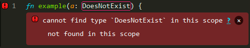 |
false | 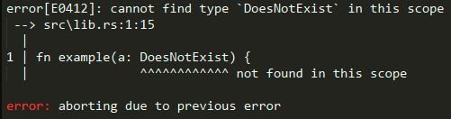 |
Popup Phantom Style
Phantoms can be displayed inline with the code, or as a popup when the mouse hovers over an error (either the gutter icon or the error outline).
The rust_phantom_style setting controls this behavior.
rust_phantom_style
| Value | Description |
|---|---|
normal | Phantoms are displayed inline. |
popup | Phantoms are displayed when the mouse hovers over an error. |
none | Phantoms are not displayed. |
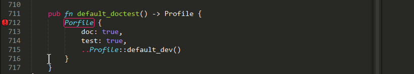
Popup Command
You can bind the rust_message_popup command to a keyboard shortcut to force a popup to open if there is a message under the cursor.
Example:
{"keys": ["f8"], "command": "rust_message_popup", "context":
[
{"key": "selector", "operator":"equal", "operand": "source.rust"}
]
}
Phantom Themes
The style of the phantom messages is controlled with the rust_message_theme setting.
Currently the following themes are available:
rust_message_theme
| Value | Example |
|---|---|
clear | 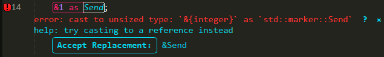 |
solid | 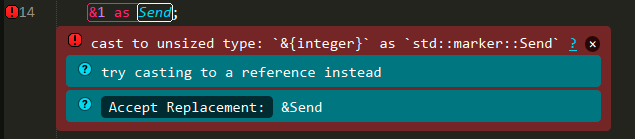 |
Clear Theme Colors
The clear theme is designed to integrate with your chosen Color Scheme.
You can customize the colors of the messages with the following settings.
| Setting | Default | Description |
|---|---|---|
rust_syntax_error_color | "var(--redish)" | Color of error messages. |
rust_syntax_warning_color | "var(--yellowish)" | Color of warning messages. |
rust_syntax_note_color | "var(--greenish)" | Color of note messages. |
rust_syntax_help_color | "var(--bluish)" | Color of help messages. |
Region Highlighting
The span of code for a compiler message is by default highlighted with an outline.
rust_region_style
| Value | Example | Description |
|---|---|---|
outline | 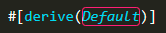 | Regions are highlighted with an outline. |
solid_underline | 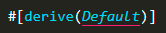 | Solid underline. |
stippled_underline | 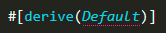 | Stippled underline. |
squiggly_underline | 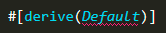 | Squiggly underline. |
none | 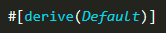 | Regions are not highlighted. |
Gutter Images
The gutter (beside the line numbers) will include an icon indicating the level of the message.
The styling of these icons is controlled with rust_gutter_style.
rust_gutter_style
| Value | Description |
|---|---|
shape | |
circle |  |
none | Do not display icons. |
Other Settings
A few other settings are available for controlling messages:
| Setting | Default | Description |
|---|---|---|
show_panel_on_build | true | If true, an output panel is displayed at the bottom of the window showing the compiler output. |
rust_syntax_hide_warnings | false | If true, will not display warning messages. |
rust_message_status_bar | false | If true, will display the message under the cursor in the window status bar. |
rust_message_status_bar_msg | "Rust check running | The message to display when the syntax check is running. |
rust_message_status_bar_chars | [".", "..", "...", ".."] | The characters shown in the status bar while a check is running. |
rust_message_status_bar_update_delay | 200 | How often (ms) should the status bar text be updated when syntax checking. |
Custom Build Variants
You can define your own build system that takes advantage of the Cargo settings. This is useful if you want to quickly switch between different configurations, or to add support for Cargo commands that are not already included.
The build variants are stored in your .sublime-project file.
To assist you in configuring a build variant, there is a Sublime command called "Rust: Create New Cargo Build Variant" which you can access from the Command Palette.
It will ask a series of questions, and when it is done it will automatically add the new build variant to your .sublime-project file.
Then use the "Build With..." command (Ctrl-Shift-B / ⌘-Shift-B) to select and execute your new variant.
The command will also copy over the stock build variants so you do not need to switch between build systems.
You can manually edit your .sublime-project file to change the settings.
The settings described above are under the "settings" key.
Additionally, there is a "command_info" key which describes the features the command supports.
The available values are:
| Setting Name | Default | Description |
|---|---|---|
allows_target | False | If True, the command accepts cargo filters for determining which target to build (--lib, --bin foo, --example bar, etc.). Can also be a sequence of strings like ["bin", "example"] to specify a subset of targets it supports. |
allows_target_triple | False | If True, the command accepts triples like --target x86_64-apple-darwin. |
allows_release | False | If True, allows --release flag. |
allows_features | False | If True, allows feature flags. |
allows_json | False | If True, allows --message-format=json flag. |
json_stop_pattern | None | A regular expression matched against Cargo's output to detect when it should stop looking for JSON messages (used by cargo run to stop looking for JSON messages once compilation is finished). |
requires_manifest | True | If True, the command must be run in a directory with a Cargo.toml manifest. |
requires_view_path | False | If True, then the active view must be a Rust source file, and the path to that file will be passed into Cargo (used mainly by cargo script). |
wants_run_args | False | If True, it will ask for extra args to pass to the executable (after the -- flag separator). |
On-save checking
Rust Enhanced will automatically run cargo check every time you save a .rs source file.
A small message will be shown in the status bar to indicate that the check is running.
If there are any errors or warnings, they will be displayed based on the settings described in the Diagnostic Messages chapter.
On-save settings
There are a few settings for controlling the on-save behavior. See the Settings chapter for more on how to configure these.
| Setting | Default | Description |
|---|---|---|
rust_syntax_checking | true | Enable the on-save syntax checking. |
rust_syntax_checking_method | "check" | The method used for checking your code (see below). |
rust_syntax_checking_include_tests | true | Enable checking of test code within #[cfg(test)] sections. |
The available checking methods are:
| Method | Description |
|---|---|
check | Uses cargo check (requires at least Rust 1.16). |
clippy | Uses cargo clippy. This requires Clippy to be installed. This also may be a little slower since it must check every target in your package. |
This will use the same configuration options as the "Check" and "Clippy" build variants (for example, extra environment variables, or checking with different features). See the build docs for more information.
If a Cargo project has several build targets (--lib, --bin, --example, etc.), it will attempt to automatically detect the correct target, and only check that target.
In some rare cases, you may need to manually specify which target a file belongs to.
This can be done by adding a "projects" setting in RustEnhanced.sublime-settings with the following format:
"projects": {
// One entry per project. Keys are project names.
"my_cool_stuff": {
// Path to the project root dir without trailing /src.
"root": "/path/to/my/cool/stuff/project",
// Targets will be used to replace {target} part in the command.
// If no one target matches an, empty string will be used.
"targets": {
"bin/foo.rs": "--bin foo", // format is "source_code_filename -> target_name"
"bin/bar.rs": "--bin bar",
"_default": "--lib" // or "--bin main"
}
}
}
Settings
To customize the settings, use the command from the Sublime menu:
Preferences > Package Settings > Rust Enhanced > Settings - User
This should open a window that shows the default settings along with a description of each one.
This also has a view on the right-hand side to edit the settings which will be stored in Packages/User/RustEnhanced.sublime-settings.
These settings will apply globally across all Sublime windows and projects.
Message display
See the Diagnostic Messages chapter for a description of the settings related to displaying diagnostic messages (warnings and errors generated by the compiler).
Build settings
The build system can be configured with the "cargo_build" setting.
See the Build Settings chapter for a description of these settings and how to configure them.
On-save settings
The on-save checking settings are described in the On-save checking chapter.
Project-specific settings
You can customize settings per-project by adding settings to your .sublime-project file under the "settings" key.
For example, if you want to use Clippy as your default for on-save checking in just one project, something like the following can be added to your .sublime-project file:
{
// These are the folders opened in the project.
"folders": [
{ "path": "." }
],
// Any Sublime settings can go here, including Rust Enhanced settings.
"settings": {
// Changes the default on-save checking behavior to use Clippy.
"rust_syntax_checking_method": "clippy",
}
}
Context Menu
You can access Sublime's context menu with a right click.
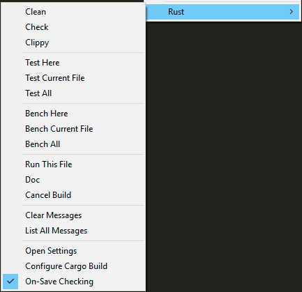
Cargo Commands
A variety of Cargo commands are available here for quick access so you don't have to frequently switch your build system variant. Some of them are context-sensitive, based on where you click the mouse.
- Clean:
cargo cleanto remove build artifacts. - Check:
cargo checkto quickly check your package for errors. - Clippy:
cargo clippyto run Clippy on your source.
- Test Here: Runs just the one test underneath the cursor. A similar command is also available in the Sublime Command Palette as "Rust: Run Test At Cursor".
- Test Current File: Runs all tests in the current file.
- Test All: Runs all tests in the package.
- Bench Here: Runs just the one benchmark underneath the cursor.
- Bench Current File: Runs all benchmarks in the current file.
- Bench All: Runs all benchmarks in the package.
- Run This File:
cargo runthe current file. - Doc:
cargo docto generate documentation. - Cancel Build: Cancel the current build. Also available with keyboard shortcuts, see build docs.
- Open Debug Log: Open a view to display debug messages generated by the Rust Enhanced plugin.
Message Commands
- Clear Messages: Remove inline error/warning messages. Also available with the Esc key, or click the × symbol in the message.
- List All Messages: Show a quick panel popup with a list of all current messages.
Settings Commands
- Open Settings: Open the Rust Enhanced settings.
- Configure Cargo Build: Run the command to interactively configure Cargo build settings stored in your Sublime project file. See Configure Command.
- On-Save Checking: Toggle
cargo checkrunning every time you save a Rust file (see On-save checking).
Language Servers
The Rust Enhanced package does not currently provide any assistance with setting up a Language Server. Language Servers are processes that run in the background and provide support for a wide range of syntax analysis, code refactoring, and much more.
There are two language server implementations for Rust:
RLS is being replaced by rust-analyzer, and it is recommended to use rust-analyzer at this time.
To use one of the language servers, you need to install the Sublime LSP plugin.
With both the plugin and one of the above servers installed, you should be able to follow the LSP docs for how to configure the server.
Generally this involves running either the LSP: Enable Language Server Globally or LSP: Enable Language Server in Project and then selecting either rls or rust-analyzer.
Depending on the size of your project, it may take some time for it to process and index.
Note that as well as error checking, code-completion, and renaming, RLS can run rustfmt on your code: right-click, and select LSP > Format Document or Format Selection in a Rust source file.
Formatting
The Rust Enhanced package does not currently provide any assistance with setting up automatic code formatting using rustfmt. The RustFmt package on Package Control provides automatic formatting support. Language servers can also provide this ability.
Tips
Some tips for working with Rust in Sublime Text:
-
Use the Goto commands to quickly navigate the code. These commands make use of the syntax highlighting to detect symbols that are important, such as function names, type definitions, etc. These commands are:
Command Keybind Description Goto Symbol Ctrl-R / ⌘-R Jump to a symbol in the current file. Goto Symbol in Project Ctrl-Shift-R / ⌘-Shift-R Jump to a symbol in the current project. Goto Definition F12 Jump to the definition of the symbol currently under the cursor. -
Use Sublime Projects. This can help organize different projects, remembers the state of the window, and allows you to set custom settings for a specific project.
-
When using on-save checking, or running a build, use the next/previous message keybindings to jump between the messages. See Build usage for more.
-
When running Cargo tests with the test build command, if a test fails, the Next/Previous message commands should jump to the line where the test failed.
-
Several snippets are provided, which are simple patterns that are triggered with auto-completion. You can even write your own custom snippets.